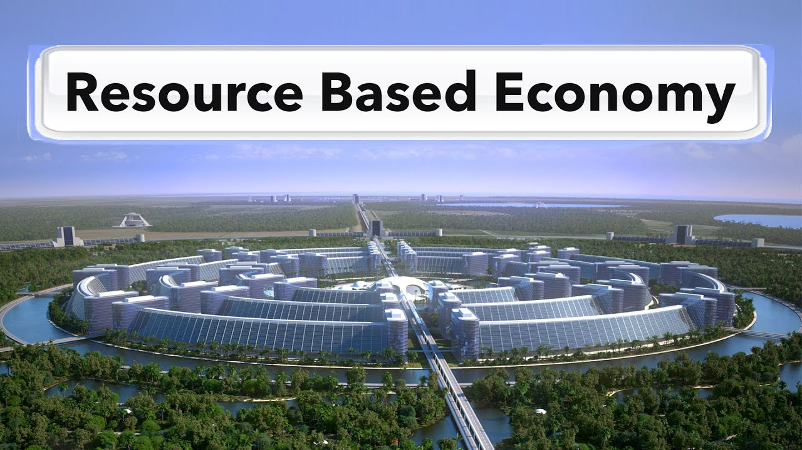

Resourse Based Economy
“We cannot solve our problems with the same thinking we used when we created them.”
~ Albert Einstein
A Global Holistic Solution:
- Global problems faced by mankind today are impacting individuals and nations rapidly. Climate change, famine, war, epidemics of deadly diseases and environmental pollution contribute to the long list of global challenges we, as humans, need to promptly address before an eventual catastrophe swiftly becomes inevitable.

- Modern society has access to highly advanced technologies and can make available food, clothing, housing, medical care, a relevant educational system, and develop a limitless supply of renewable, non-contaminating energy such as geothermal, solar, wind and tidal.
- We are separated by borders and beliefs which make it impossible for us to arrive at relevant solutions while being divided ideologically. Most of our problems today are technical but we are still looking for solutions through political means. We need to accept that eliminating these global threats requires the employment of methodologies rather than personal opinions.